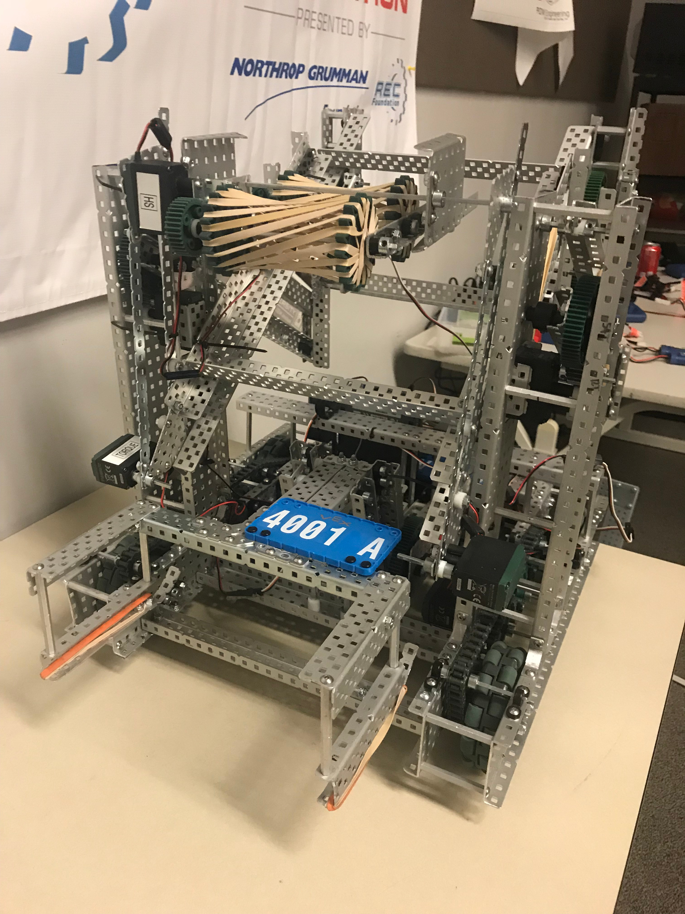
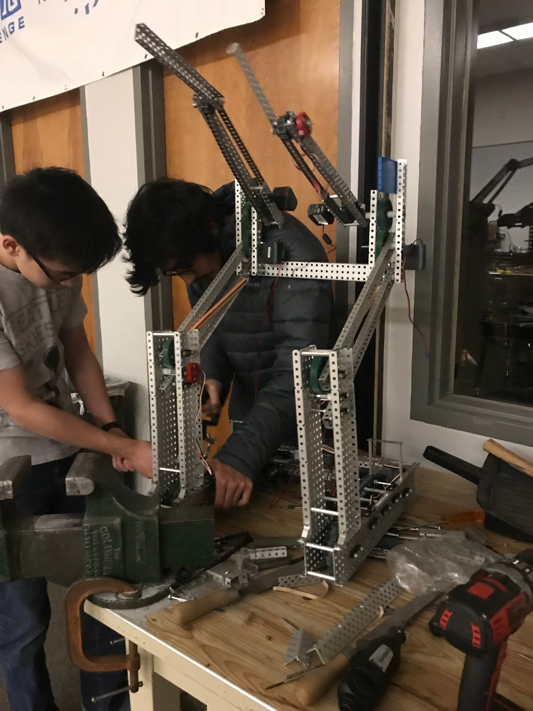

Drive System

The current iteration of our robot's drive system consists of six motors linked together with a chain drive operating on a 1:1 gear ratio.
Four motors are regular, turbo geared VEX 393 motors linked together with a Y-splitter, while the other two are turbo geared motors with integrated motor encoders that provide real-time sensor data to the VEX Cortex microcontroller for our autonomous sequence.
In previous competitions, we used a four motor drive system with a 1:3 gear ratio. This was changed to our current configuration for increased speed and to be able to quickly change motors. This also eliminated the need for bulky external quadrature encoders.
Lift Systems

Our lift systems consist of a motor driven mobile goal lift system, and a four-bar, two motor cone lift system. We designed a claw that uses rubber bands, sprockets, and motors to latch onto a cone and bring it up. We also use a four bar linkage attached to two motors to move the claw forwards and backwards so we can internally stack cones on mobile goals.
In previous competitions, we used a pneumatics based mobile lift system which had two pistons operated by a solenoid linked to the VEX Cortex microcontroller. This was replaced with our current system due to advantages in speed and eliminating the need to drive into a scoring zone in order to drop the goal.
Additionally, the lift system formerly consisted of four motors, two of which operated the back two bars, and two of which operated the arms (through a chain and sprockets system) that the claw was fixed to. This was changed in order to increase the speed and efficiency of the cone lift system. An internal stacking system was also added to increase the amount of points we can score.
Finally, our claw now consists of a braided, rubber bands and sprockets roller design. We formerly had a "snapper" type claw that consisted of two pieces of metal that would grab onto the top of the claw. This was abandoned due to cones being difficult to pick up and and the tendency of cones to slip out of the claw.
Code

Previously, our code routed signals from the controller directly to the robot. However, our code now uses a smart motor library, in order to have built in PID control as well as temperature tracking inside the motors. This is to prevent the motors from overheating during the course of a match.
Our team uses two controllers to operate the robot. The drive and mobile goal systems are run off of the main controller, while another person operates the the cone lift system and claw using the partner controller.
Depending on our alliance partner, we have several different autonomous plans to choose from.
All of our programs are stored on the code management site GitHub. This is to preserve each version of a program in the event that we need to use an older version.
Awards & Acknowledgements
We were proud to represent Parkland High School at the Sarah Heinz House VRC Qualifier, where we won an Excellence Award and ended the competition as finalists. We also represented our school at the Parkland VRC Qualifier and the Harriton VRC Qualifier, in which we won a Judges Award.
The robot was designed and constructed by Ethan Lin, Ojas Gupta, Soham Sane, Tom Broadhurst, Joshua Ye, and Harper Chisari, with additional support from Alan Uthuppan, Zoe Basilone, and Arjun Vedantham.
The programming behind our robot was written by Arjun Vedantham and Ethan Lin.
Our advisor is Mr. Yocum. (Thanks for your help!)